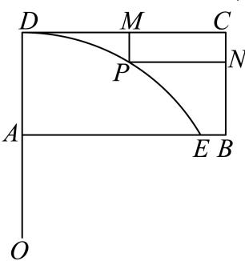
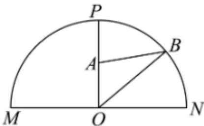
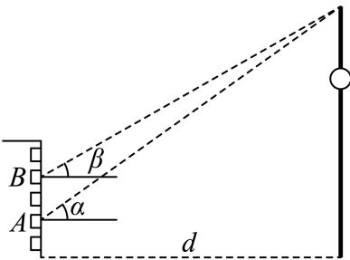

倾斜角、同角倍角与诱导求值 用斜率与反正切确定倾斜角；其余求值先明确象限和角范围，再用三角恒等式或反例判断。
嘉定 · 第2题 ★☆☆☆☆ · 教师预估 本题资料或解析有待核事项，预览不可作为已审定成品。
直线3x − y + 1 = 0的倾斜角为 .（用反三角函数表示）
奉贤 · 第13题 ★★☆☆☆ · 教师预估 本题资料或解析有待核事项，预览不可作为已审定成品。
在 △ A B C r \triangle A B C ^ { \ r } △ A B C r ∗ C = π 2 ; ^ { \ast } C = \frac { \pi } { 2 } ; ∗ C = 2 π ; ¨ sin 2 A + sin 2 B = 1 \ddot { } \sin ^ { 2 } A + \sin ^ { 2 } B = 1 ¨ sin 2 A + sin 2 B = 1
A. 充分不必要条件
B. 必要不充分条件
C. 充要条件
D. 既不充分也不必要条件
普陀 · 第13题 ★★☆☆☆ · 教师预估 本题资料或解析有待核事项，预览不可作为已审定成品。
设 α ∈ R \alpha\in\mathbb{R} α ∈ R cos 2 α = 1 3 \cos 2\alpha=\frac{1}{3} cos 2 α = 3 1 sin α = 3 3 \sin\alpha=\frac{\sqrt{3}}{3} sin α = 3 3
A. 充分非必要条件
B. 必要非充分条件
C. 充要条件
D. 既非充分又非必要条件
松江 · 第2题 ★☆☆☆☆ · 教师预估 本题资料或解析有待核事项，预览不可作为已审定成品。
若 s i n θ = 4 5 \mathrm { s i n } \theta = \frac { 4 } { 5 } sin θ = 5 4 l c o s 2 θ \mathrm { \ l c o s 2 \theta } lcos2 θ
虹口 · 第3题 ★☆☆☆☆ · 教师预估 本题资料或解析有待核事项，预览不可作为已审定成品。
若tan α = 5，则tan 2α =
虹口 · 第13题 ★★☆☆☆ · 教师预估 本题资料或解析有待核事项，预览不可作为已审定成品。
已知 α ∈ ( 0 , π ) \alpha\in(0,\pi) α ∈ ( 0 , π ) sin ( π − α ) = 1 2 \sin(\pi-\alpha)=\frac12 sin ( π − α ) = 2 1 cos α = 3 2 \cos\alpha=\frac{\sqrt3}2 cos α = 2 3
A. 充要
B. 充分非必要
C. 必要非充分
D. 既非充分又非必要
金山 · 第13题 ★☆☆☆☆ · 教师预估 函数 ⟨ y = 1 − 2 sin 2 \langle y = 1 - 2 \sin ^ { 2 } ⟨ y = 1 − 2 sin 2
A. 最小正周期为π的奇函数
B. 最小正周期为π的偶函数
C. 最小正周期为 π 2 \frac { \pi } { 2 } 2 π
D. 最小正周期为 π 2 \frac { \pi } { 2 } 2 π
闵行 · 第15题 ★★★★☆ · 教师预估 设f ( x ) = ( sin x − cos x ) ( cos x − tan x ) ( tan x − sin x ) ( x ) = ( \sin x - \cos x ) ( \cos x - \tan x ) ( \tan x - \sin x ) ( x ) = ( sin x − cos x ) ( cos x − tan x ) ( tan x − sin x ) f ( α ) f ( β ) < 0. f \left( \alpha \right) f \left( \beta \right) < 0 . f ( α ) f ( β ) < 0.
A. 第一象限
B. 第二象限
C. 第三象限
D. 第四象限
静安 · 第6题 ★★☆☆☆ · 教师预估 在△ABC中，已知 B C = 5 , A C = 4 , A = 2 B B C = 5 , A C = 4 , A = 2 B BC = 5 , A C = 4 , A = 2 B
周期、值域、零点与参数 把相位区间、极值点个数和平移条件转化为频率及角的约束。
嘉定 · 第18题 ★★★★☆ · 教师预估 本题资料或解析有待核事项，预览不可作为已审定成品。
已知 f ( x ) = 2 cos ( ω x + 3 π 4 ) f \left( x \right) = 2 \cos { \left( \omega x + \frac { 3 \pi } { 4 } \right) } f ( x ) = 2 cos ( ω x + 4 3 π ) ι ω > 0 \iota _ { \omega } > 0 ι ω > 0 ω = 2，求函数 ⟨ y = f ( x ) , x ∈ [ − π 4 , π 4 ] \langle y = f ( x ) , x \in \left[ - \frac { \pi } { 4 } , \frac { \pi } { 4 } \right] ⟨ y = f ( x ) , x ∈ [ − 4 π , 4 π ] f ( π 4 ) = 0 f \left( { \frac { \pi } { 4 } } \right) = 0 f ( 4 π ) = 0 { y = f ( x ) \{ y = f ( x ) { y = f ( x ) ( π 4 , π 3 ) \left( { \frac { \pi } { 4 } } , { \frac { \pi } { 3 } } \right) ( 4 π , 3 π )
嘉定 · 第21题 ★★★★☆ · 教师预估 本题资料或解析有待核事项，预览不可作为已审定成品。
设A为非空集合，函数f (x)的定义域为D.若存在 Φ x 0 ∈ D \mathbf { \Phi } _ { \boldsymbol { x } _ { 0 } } \in \mathbf { D } Φ x 0 ∈ D f ( x ) − f ( x 0 ) ∈ A f \left( x \right) - f \left( x _ { 0 } \right) \in \mathrm { A } f ( x ) − f ( x 0 ) ∈ A 0 )为函数f(x)的一个A值，x0 为相应的A值点.A = [ − 2 , 0 ] , f ( x ) = sin x A = [ - 2 , 0 ] , f ( x ) = \sin x A = [ − 2 , 0 ] , f ( x ) = sin x x 0 = 2 k π + 1 2 π , k ∈ Z x _ { 0 } = 2 k \pi + \frac { 1 } { 2 } \pi , k \in { \bf Z } x 0 = 2 kπ + 2 1 π , k ∈ Z A = [ 0 , + ∞ ) , f ( x ) = − x , g ( x ) = x 2 + x + 1 A = [ 0 , + \infty ) , f ( x ) = - x , g ( x ) = x ^ { 2 } + x + 1 A = [ 0 , + ∞ ) , f ( x ) = − x , g ( x ) = x 2 + x + 1 ∇ f ( x ) , g ( x ) { \bf \nabla } f \left( x \right) , g \left( x \right) ∇ f ( x ) , g ( x ) A = ( − ∞ , 0 ] A = ( - \infty , 0 ] A = ( − ∞ , 0 ] f ( x ) = ln x + a x 2 ( a ∈ R ) f \left( x \right) = \ln x + a x ^ { 2 } \left( a \in \mathbf { R } \right) f ( x ) = ln x + a x 2 ( a ∈ R )
奉贤 · 第12题 ★★★★☆ · 教师预估 本题资料或解析有待核事项，预览不可作为已审定成品。
已知集合 ∂ M = { P 0 , P 1 , P 2 , ⋯ , P n } , n ≥ 2 , n ∈ N \mathbf { \partial } M = \{ P _ { 0 } , P _ { 1 } , P _ { 2 } , \cdots , P _ { n } \} , n \geq 2 , n \in \mathbf { N } ∂ M = { P 0 , P 1 , P 2 , ⋯ , P n } , n ≥ 2 , n ∈ N y = cos x , x ∈ [ 0 , 2 π ] y = \cos x , x \in [ 0 , 2 \pi ] y = cos x , x ∈ [ 0 , 2 π ] S = { a ∣ a = O P 0 → ⋅ O P i → , i = 0 , 1 , 2 , ⋯ , n , n ≥ 2 , n ∈ N } S = \left\{ a | a = { \overrightarrow { O P _ { 0 } } } \cdot { \overrightarrow { O P _ { i } } } , i = 0 , 1 , 2 , \cdots , n , n \geq 2 , n \in \mathbf { N } \right\} S = { a ∣ a = O P 0 ⋅ O P i , i = 0 , 1 , 2 , ⋯ , n , n ≥ 2 , n ∈ N } P 0 ( 0 , 1 ) P _ { 0 } \left( 0 , 1 \right) P 0 ( 0 , 1 ) P 1 ( π , − 1 ) P _ { 1 } \left( \pi , - 1 \right) P 1 ( π , − 1 ) d ∈ { 1 2 , 1 } d \in \left\{ { \frac { 1 } { 2 } } , 1 \right\} d ∈ { 2 1 , 1 }
奉贤 · 第14题 ★★★☆☆ · 教师预估 本题资料或解析有待核事项，预览不可作为已审定成品。
函数 y = log 2 sin x + log 2 cos x y = \log _ { 2 } \sin x + \log _ { 2 } \cos x y = log 2 sin x + log 2 cos x
A. 函数是偶函数
B. 函数定义域是 ( 0 , π 2 ) \left( 0 , { \frac { \pi } { 2 } } \right) ( 0 , 2 π )
C. 函数最大值−1
D. 函数的最小正周期为π
奉贤 · 第21题 ★★★★★ · 教师预估 本题资料或解析有待核事项，预览不可作为已审定成品。
若函数 ⋅ y = f ( x ) \boldsymbol { \cdot } \boldsymbol { y } = \boldsymbol { f } \left( \boldsymbol { x } \right) ⋅ y = f ( x ) P 1 ∖ P 2 ∖ ⋯ P k ( k ≥ 2 , k ∈ N ) P _ { 1 \setminus } \ P _ { 2 \setminus } \ \cdots \ P _ { k } \left( k \geq 2 , k \in \mathbf { N } \right) P 1 ∖ P 2 ∖ ⋯ P k ( k ≥ 2 , k ∈ N ) y = f ( x ) y = f \left( x \right) y = f ( x ) y = x 2 − 2 ∣ x ∣ , x ∈ R y = x ^ { 2 } - 2 | x | , x \in \mathbf { R } y = x 2 − 2∣ x ∣ , x ∈ R f ( x ) = e x − ln x f \left( x \right) = \mathrm { e } ^ { x } - \ln x f ( x ) = e x − ln x y = f ( x ) y = f \left( x \right) y = f ( x ) y ( x ) = cos x + 2 x y \left( x \right) = \cos x + 2 x y ( x ) = cos x + 2 x m ≥ 3 , m ∈ N m \ge 3 , m \in \mathbf { N } m ≥ 3 , m ∈ N y = g ( x ) y = g \left( x \right) y = g ( x )
宝山 · 第2题 ★☆☆☆☆ · 教师预估 …⋅ y = cos 2 x + 1 \cdot y = \cos { 2 x } + 1 ⋅ y = cos 2 x + 1
崇明 · 第11题 ★★★☆☆ · 教师预估 本题资料或解析有待核事项，预览不可作为已审定成品。
已知 f ( x ) = A sin ( ω x + π 6 ) f(x)=A\sin(\omega x+\frac\pi6) f ( x ) = A sin ( ω x + 6 π ) A > 0 , ω > 0 A>0,\omega>0 A > 0 , ω > 0 y = f ( x ) y=f(x) y = f ( x ) [ 0 , 2 π ] [0,2\pi] [ 0 , 2 π ] ω \omega ω
徐汇 · 第17题 ★★★☆☆ · 教师预估 本题资料或解析有待核事项，预览不可作为已审定成品。
已知 ∣ f ( x ) = a sin ω x + b cos ω x ( ω > 0 ) \mid f \left( x \right) = a \sin \omega x + b \cos \omega x \left( \omega > 0 \right) ∣ f ( x ) = a sin ω x + b cos ω x ( ω > 0 ) y = f ( x ) y = f \left( x \right) y = f ( x ) x ∈ R \mathbf { { \boldsymbol { x } } \in \mathbf { { \boldsymbol { R } } } } x ∈ R f ( x ) ≤ f ( π 12 ) = 4. f \left( x \right) \leq f \left( { \frac { \pi } { 1 2 } } \right) = 4 . f ( x ) ≤ f ( 12 π ) = 4. x 1 , x 2 ∈ ( 0 , π ) x _ { 1 } , x _ { 2 } \in ( 0 , \pi ) x 1 , x 2 ∈ ( 0 , π ) x 1 ≠ x 2 x _ { 1 } \neq x _ { 2 } x 1 = x 2 f ( x 1 ) = f ( x 2 ) = − 2 f \left( x _ { 1 } \right) = f \left( x _ { 2 } \right) = - 2 f ( x 1 ) = f ( x 2 ) = − 2 x 1 + x 2 x _ { 1 } + x _ { 2 } x 1 + x 2
普陀 · 第18题 ★★★☆☆ · 教师预估 本题资料或解析有待核事项，预览不可作为已审定成品。
设函数 ⋅ y = f ( x ) \cdot y = f \left( x \right) ⋅ y = f ( x ) f ( x ) = sin ( ω x ) f \left( x \right) = \sin \left( \omega x \right) f ( x ) = sin ( ω x ) ω > 0 \omega > 0 ω > 0 m ∈ R m \in \mathbf { R } m ∈ R ⋅ x 0 ∈ ( 0 , m ) \cdot x _ { 0 } \in ( 0 , m ) ⋅ x 0 ∈ ( 0 , m ) y = f ( x + π 4 ) y = f \left( x + { \frac { \pi } { 4 } } \right) y = f ( x + 4 π ) (2) (8分) 若对任意的 ∣ x ∈ R . | x \in \mathrm { R } . ∣ x ∈ R . f ( x ) + f ( 2 π 3 − x ) = 0 f \left( x \right) + f \left( \frac { 2 \pi } { 3 } - x \right) = 0 f ( x ) + f ( 3 2 π − x ) = 0 y = f ( x ) y = f \left( x \right) y = f ( x ) ( − π 8 , 0 ) \left( - { \frac { \pi } { 8 } } , 0 \right) ( − 8 π , 0 ) y = f ( x ) y = f \left( x \right) y = f ( x )
杨浦 · 第2题 ★☆☆☆☆ · 教师预估 本题资料或解析有待核事项，预览不可作为已审定成品。
函数 y = sin 2 x y = \sin 2 x y = sin 2 x
杨浦 · 第21题 ★★★★★ · 教师预估 本题资料或解析有待核事项，预览不可作为已审定成品。
已知 ∣ y = f ( x ) \left| y = f \left( x \right) \right. ∣ y = f ( x ) { p ∈ ( 0 , 1 ) \{ p \in ( 0 , 1 ) { p ∈ ( 0 , 1 ) y = ( 1 − p ) f ( 0 ) + p f ( x ) − f ( p x ) , x ∈ [ 0 , 1 ] y = ( 1 - p ) f \left( 0 \right) + p f \left( x \right) - f \left( p x \right) , x \in \left[ 0 , 1 \right] y = ( 1 − p ) f ( 0 ) + p f ( x ) − f ( p x ) , x ∈ [ 0 , 1 ] y ˙ = f ( x ) H ˙ ′ J ˙ p ⋅ ˙ \begin{array} { r } { \dot { \boldsymbol { y } } = \boldsymbol { f } ( \boldsymbol { x } ) \dot { \boldsymbol { \mathrm { H } } } ^ { \prime } \dot { \boldsymbol { \mathrm { J } } } ^ { } \boldsymbol { p } \dot { \boldsymbol { \cdot } } } \end{array} y ˙ = f ( x ) H ˙ ′ J ˙ p ⋅ ˙ y = F p ( x ) , x ∈ [ 0 , 1 ] y = F _ { p } \left( x \right) , x \in \left[ 0 , 1 \right] y = F p ( x ) , x ∈ [ 0 , 1 ] ⋅ ˙ f ( x ) = cos 2 π x { \bf \dot { \cdot } } f \left( x \right) = \cos 2 \pi x ⋅ ˙ f ( x ) = cos 2 π x ⋅ y = F 1 2 ( x ) \boldsymbol { \cdot } \boldsymbol { y } = F _ { \frac { 1 } { 2 } } \left( x \right) ⋅ y = F 2 1 ( x ) f ( x ) = a x 2 + ln ( 1 + x ) f \left( x \right) = a x ^ { 2 } + \ln \left( 1 + x \right) f ( x ) = a x 2 + ln ( 1 + x ) ⋅ y = F 1 3 ( x ) \boldsymbol { \cdot } \boldsymbol { y } = F _ { \frac { 1 } { 3 } } \left( x \right) ⋅ y = F 3 1 ( x ) F 1 3 ( x ) ≥ 0 F _ { \frac { 1 } { 3 } } \left( x \right) \geq 0 F 3 1 ( x ) ≥ 0 ≤ x ≤ 1 \leq x \leq 1 ≤ x ≤ 1 y = f ( x ) y = f \left( x \right) y = f ( x ) 1 ◯ f ( 0 ) = 0 ; 2 ◯ y = f ( x ) \textcircled { 1 } f \left( 0 \right) = 0 ; \textcircled { 2 } y = f \left( x \right) 1 ◯ f ( 0 ) = 0 ; 2 ◯ y = f ( x ) Σ ¨ ∇ y = f ′ ( x ) { \ddot { \Sigma } } \nabla y = f ^ { \prime } \left( x \right) Σ ¨ ∇ y = f ′ ( x ) y = f ′ ( x ) y = f ^ { \prime } \left( x \right) y = f ′ ( x ) p ∈ ( 0 , 1 ) , y = f ( x ) p \in ( 0 , 1 ) , y = f \left( x \right) p ∈ ( 0 , 1 ) , y = f ( x ) ′ y = F p ( x ) , x ∈ [ 0 , 1 ] \ ' y = F _ { p } \left( x \right) , x \in \left[ 0 , 1 \right] ′ y = F p ( x ) , x ∈ [ 0 , 1 ] ℘ = f ( x ) x \wp = { \frac { f \left( x \right) } { x } } ℘ = x f ( x )
浦东 · 第17题 ★★☆☆☆ · 教师预估 本题资料或解析有待核事项，预览不可作为已审定成品。
已知函数 y = f ( x ) y = f \left( x \right) y = f ( x ) f ( x ) = sin ω x , ω > 0 f \left( x \right) = \sin \omega x , \omega > 0 f ( x ) = sin ω x , ω > 0 y = f ( x ) y = f \left( x \right) y = f ( x ) π 2 \frac { \pi } { 2 } 2 π y = f ( x ) y = f \left( x \right) y = f ( x ) y = g ( x ) y = g \left( x \right) y = g ( x ) ∣ g ( x ) = f ( x ) + 3 cos 2 x \begin{array} { r } { | g ( x ) = f ( x ) + \sqrt { 3 } \cos 2 x } \end{array} ∣ g ( x ) = f ( x ) + 3 cos 2 x x ∈ [ 0 , π 2 ] x \in \left[ 0 , { \frac { \pi } { 2 } } \right] x ∈ [ 0 , 2 π ] y = g ( x ) y = g \left( x \right) y = g ( x )
虹口 · 第16题 ★★★★☆ · 教师预估 本题资料或解析有待核事项，预览不可作为已审定成品。
设数列 { a n } \left\{ a _ { n } \right\} { a n } a 1 , a 2 , a 3 , a 4 a _ { 1 } , ~ a _ { 2 } , ~ a _ { 3 } , ~ a _ { 4 } a 1 , a 2 , a 3 , a 4 { a n } \left\{ a _ { n } \right\} { a n } { sin α , cos α , tan α } = { a 1 , a 2 , a 3 } \{ \sin \alpha , \cos \alpha , \tan \alpha \} = \{ a _ { 1 } , a _ { 2 } , a _ { 3 } \} { sin α , cos α , tan α } = { a 1 , a 2 , a 3 } { a n } \left\{ a _ { n } \right\} { a n } { sin α , cos α , tan α , cot α } = { a 1 , a 2 , a 3 , a 4 } \{ \sin \alpha , \cos \alpha , \tan \alpha , \cot \alpha \} = \{ a _ { 1 } , a _ { 2 } , a _ { 3 } , a _ { 4 } \} { sin α , cos α , tan α , cot α } = { a 1 , a 2 , a 3 , a 4 }
A. ①是真命题，②是真命题
B. ①是真命题，②是假命题
C. ①是假命题，②是真命题
D. ①是假命题，②是假命题
金山 · 第9题 ★★☆☆☆ · 教师预估 在(0, 2π)内，使 i s i n x ≥ cos x \mathrm { i } _ { \mathrm { s i n } } x \geq \cos x i sin x ≥ cos x
金山 · 第21题 ★★★★★ · 教师预估 本题资料或解析有待核事项，预览不可作为已审定成品。
对于函数 y = f ( x ) y = f \left( x \right) y = f ( x ) A ( x 1 , y 1 ) , B ( x 2 , y 2 ) , M ( x 0 , y 0 ) A \left( x _ { 1 } , y _ { 1 } \right) , B \left( x _ { 2 } , y _ { 2 } \right) , M \left( x _ { 0 } , y _ { 0 } \right) A ( x 1 , y 1 ) , B ( x 2 , y 2 ) , M ( x 0 , y 0 ) x 0 ∈ ( x 1 , x 2 ) ) x _ { 0 } \in \left( x _ { 1 } , x _ { 2 } \right) ) x 0 ∈ ( x 1 , x 2 ) ) l / / A B l / / A B l // A B y = f ( x ) y = f \left( x \right) y = f ( x ) ( x 1 , x 2 ) ( x _ { 1 } , x _ { 2 } ) ( x 1 , x 2 ) x 0 = x 1 + x 2 2 x _ { 0 } = { \frac { x _ { 1 } + x _ { 2 } } { 2 } } x 0 = 2 x 1 + x 2 ⋅ y = f ( x ) \boldsymbol { \cdot } \boldsymbol { y } = \boldsymbol { f } \left( \boldsymbol { x } \right) ⋅ y = f ( x ) ( x 1 , x 2 ) ( x _ { 1 } , x _ { 2 } ) ( x 1 , x 2 ) f ( x ) = x 2 , M ( x 0 , y 0 ) f \left( x \right) = x ^ { 2 } , M \left( x _ { 0 } , y _ { 0 } \right) f ( x ) = x 2 , M ( x 0 , y 0 ) ⋅ y = f ( x ) \boldsymbol { \cdot } \boldsymbol { y } = \boldsymbol { f } \left( \boldsymbol { x } \right) ⋅ y = f ( x ) ( 0 , n ) ( 0 , n ) ( 0 , n ) f ′ ( x 0 ) = 1 f ^ { \prime } \left( x _ { 0 } \right) = 1 f ′ ( x 0 ) = 1 f ( x ) = a sin 2 x + cos x + x − 1 f \left( x \right) = a \sin 2 x + \cos x + x - 1 f ( x ) = a sin 2 x + cos x + x − 1 ⋅ y = f ( x ) \boldsymbol { \cdot } \boldsymbol { y } = \boldsymbol { f } \left( \boldsymbol { x } \right) ⋅ y = f ( x ) f ( x ) = ln x + b x 2 ( b ∈ R ) f \left( x \right) = \ln x + b x ^ { 2 } \left( b \in \mathrm { R } \right) f ( x ) = ln x + b x 2 ( b ∈ R ) y = f ( x ) y = f \left( x \right) y = f ( x ) ] ( x 1 , x 2 ) ] ( x _ { 1 } , x _ { 2 } ) ] ( x 1 , x 2 ) J ( x 1 , x 2 ) \mathbb { J } ( x _ { 1 } , x _ { 2 } ) J ( x 1 , x 2 )
长宁 · 第15题 ★★★☆☆ · 教师预估 已知函数 y = sin ( ω x + π 6 ) y=\sin(\omega x+\frac\pi6) y = sin ( ω x + 6 π ) ω > 0 \omega>0 ω > 0 ( − π 2 , π 3 ) (-\frac\pi2,\frac\pi3) ( − 2 π , 3 π ) ω \omega ω
A. ( 0 , 1 ] (0,1] ( 0 , 1 ]
B. ( 0 , 1 ) (0,1) ( 0 , 1 )
C. ( 1 , 4 3 ) (1,\frac43) ( 1 , 3 4 )
D. ( 0 , 6 5 ] (0,\frac65] ( 0 , 5 6 ]
闵行 · 第12题 ★★★★★ · 教师预估 已知 f ( x ) = ∣ sin ω x ∣ f \left( x \right) = \left| \sin \omega x \right| f ( x ) = ∣ sin ω x ∣ 1 、 x 2 ∈ [ ω π , 2 ω π ] x _ { 2 } \in [ \omega \pi , 2 \omega \pi ] x 2 ∈ [ ωπ , 2 ωπ ] x 1 ≠ x 2 x _ { 1 } \neq x _ { 2 } x 1 = x 2 1 f ( x 1 ) + 1 + 1 f ( x 2 ) + 1 = { \frac { 1 } { f \left( x _ { 1 } \right) + 1 } } + { \frac { 1 } { f \left( x _ { 2 } \right) + 1 } } = f ( x 1 ) + 1 1 + f ( x 2 ) + 1 1 =
闵行 · 第18题 ★★★☆☆ · 教师预估 已知 f ( x ) = { x 2 − a x , x ≥ 0 x + 1 x , x < 0 \begin{array} { r } { f \left( x \right) = \left\{ \begin{array} { l l } { x ^ { 2 } - a x , x \geq 0 } \\ { x + \displaystyle \frac { 1 } { x } , x < 0 } \end{array} \right. } \end{array} f ( x ) = { x 2 − a x , x ≥ 0 x + x 1 , x < 0 y = f ( x ) y = f ( x ) y = f ( x ) ( ⊕ ) = ( 0 , π 4 ) \mathrm { { \it ~ ~ } } \mathcal { ( \mathrm { { \bf ~ \oplus ~ } } ) } = ( 0 , \frac { \pi } { 4 } ) ( ⊕ ) = ( 0 , 4 π ) f ( sin φ ) = f ( cos φ ) f ( \sin \varphi ) = f ( \cos \varphi ) f ( sin φ ) = f ( cos φ )
青浦 · 第17题 ★★★☆☆ · 教师预估 本题资料或解析有待核事项，预览不可作为已审定成品。
已知函数 f ( x ) = ( 2 c o s 2 x − 1 ) s i n 2 x + 1 2 c o s 4 x f ( x ) = ( 2 \mathrm { { c o s } } ^ { 2 } x - 1 ) \mathrm { { s i n } } 2 x + { \frac { 1 } { 2 } } \mathrm { { c o s } } 4 x f ( x ) = ( 2 cos 2 x − 1 ) sin 2 x + 2 1 cos 4 x i α ∈ ( π 2 , π ) \mathrm { i } \alpha \in ( \frac { \pi } { 2 } , \pi ) i α ∈ ( 2 π , π ) f ( α ) = 2 2 f ( \alpha ) = \frac { \sqrt { 2 } } { 2 } f ( α ) = 2 2
黄浦 · 第15题 ★★★☆☆ · 教师预估 本题资料或解析有待核事项，预览不可作为已审定成品。
设 0 ≤ x < 2 π 0\le x<2\pi 0 ≤ x < 2 π sin ( x + π 6 ) = sin x + sin π 6 \sin(x+\frac\pi6)=\sin x+\sin\frac\pi6 sin ( x + 6 π ) = sin x + sin 6 π x x x
A. 0个
B. 1个
C. 2个
D. 无数个
黄浦 · 第18题 ★★☆☆☆ · 教师预估 本题资料或解析有待核事项，预览不可作为已审定成品。
已知 ∣ f ( x ) = sin x . \left| f \left( x \right) \right. = \sin { x } . ∣ f ( x ) = sin x . y ˙ = f ( x ) ⋅ f ( π 2 − x ) \mathbf { \dot { \boldsymbol { y } } } = f \left( \boldsymbol { x } \right) \cdot f \left( \frac { \pi } { 2 } - \boldsymbol { x } \right) y ˙ = f ( x ) ⋅ f ( 2 π − x ) : y = f ( 2 x + π 3 ) , x ∈ [ 0 , π 2 ] : y = f \left( 2 x + { \frac { \pi } { 3 } } \right) , x \in \left[ 0 , { \frac { \pi } { 2 } } \right] : y = f ( 2 x + 3 π ) , x ∈ [ 0 , 2 π ]
正余弦定理与三角形边角 依据边角关系、面积和周长确定方法，检查三角形存在条件。
嘉定 · 第4题 ★☆☆☆☆ · 教师预估 本题资料或解析有待核事项，预览不可作为已审定成品。
在 △ A B C ′ \triangle A B C ^ { \prime } △ A B C ′ A B = 5 , B C = 21 , C A = 4 A B = 5 , B C = { \sqrt { 2 1 } } , C A = 4 A B = 5 , BC = 21 , C A = 4
宝山 · 第18题 ★★★☆☆ · 教师预估 本题资料或解析有待核事项，预览不可作为已审定成品。
…△ A B C \triangle A B C ^ { } △ A B C 1 6 2 + c 2 = a 2 + b c \displaystyle { 1 6 ^ { 2 } + c ^ { 2 } = a ^ { 2 } + b c } 1 6 2 + c 2 = a 2 + b c s i n ˙ C = 2 sin B \mathbf { \dot { s i n } } C = 2 \sin B sin ˙ C = 2 sin B b = 2 b = 2 b = 2 △ A B C \triangle A B C △ A BC b ˙ + c = 1 \dot { \boldsymbol { b } } + \boldsymbol { c } = 1 b ˙ + c = 1
崇明 · 第18题 ★★★☆☆ · 教师预估 在 △ A B C ′ \triangle A B C ^ { \prime } △ A B C ′ A D ⊥ B C A D \bot B C A D ⊥ BC ∠ A B D = 2 ∠ A C D \angle A B D = 2 \angle A C D ∠ A B D = 2∠ A C D ∠ A B D = 5 5 ∘ , ∠ A C D = 3 2 ∘ \angle A B D = 5 5 ^ { \circ } , \angle A C D = 3 2 ^ { \circ } ∠ A B D = 5 5 ∘ , ∠ A C D = 3 2 ∘
徐汇 · 第10题 ★★★☆☆ · 教师预估 本题资料或解析有待核事项，预览不可作为已审定成品。
已知椭圆 x 2 a 2 + y 2 b 2 = 1 ( a > b > 0 ) { \frac { x ^ { 2 } } { a ^ { 2 } } } + { \frac { y ^ { 2 } } { b ^ { 2 } } } = 1 ( a > b > 0 ) a 2 x 2 + b 2 y 2 = 1 ( a > b > 0 ) F 1 , F 2 F _ { 1 } , F _ { 2 } F 1 , F 2 ∠ P F 2 F 1 = π 3 \angle P F _ { 2 } F _ { 1 } = \frac { \pi } { 3 } ∠ P F 2 F 1 = 3 π 3 − 1 { \sqrt { 3 } } - 1 3 − 1 ∠ P F 1 F 2 \angle P F _ { 1 } F _ { 2 } ∠ P F 1 F 2
普陀 · 第6题 ★★☆☆☆ · 教师预估 本题资料或解析有待核事项，预览不可作为已审定成品。
设△ABC的内角A，B，C的对边分别为a， b , c , b , \ c , b , c , sin ( A + π 3 ) = 0 \sin \left( A + { \frac { \pi } { 3 } } \right) = 0 sin ( A + 3 π ) = 0 △ A B C \triangle A B C △ A BC 3 \sqrt { 3 } 3
杨浦 · 第18题 ★★★☆☆ · 教师预估 本题资料或解析有待核事项，预览不可作为已审定成品。
已知 △ A B C \triangle A B C △ A BC a , b , c . a , b , c . a , b , c . ( a + b ) 2 − c 2 = 4 , C = 6 0 ∘ ( a + b ) ^ { 2 } - c ^ { 2 } = 4 , C = 6 0 ^ { \circ } ( a + b ) 2 − c 2 = 4 , C = 6 0 ∘ △ A B C \triangle A B C △ A BC cos C c = cos A 3 b − a { \frac { \cos C } { c } } = { \frac { \cos A } { 3 b - a } } c c o s C = 3 b − a c o s A
松江 · 第4题 ★☆☆☆☆ · 教师预估 本题资料或解析有待核事项，预览不可作为已审定成品。
在 △ A B C r \triangle A B C ^ { \ r } △ A B C r b = 3 , C = 5 6 π b = { \sqrt { 3 } } , \ C = { \frac { 5 } { 6 } } \pi b = 3 , C = 6 5 π
浦东 · 第5题 ★★☆☆☆ · 教师预估 本题资料或解析有待核事项，预览不可作为已审定成品。
在△ABC中，BC = 5， ∠ B = 4 5 ∘ \angle B = 4 5 ^ { \circ } ∠ B = 4 5 ∘ ∠ C = 10 5 ∘ \angle C = 1 0 5 ^ { \circ } ∠ C = 10 5 ∘
长宁 · 第17题 ★★★☆☆ · 教师预估 在 △ A B C ♯ \triangle A B C \sharp △ A BC ♯ b sin A − 3 a cos B = 0 b \sin A - { \sqrt { 3 } } a \cos B = 0 b sin A − 3 a cos B = 0 b ˙ = 2 , △ A B C \mathbf { \dot { b } } = 2 , \triangle A B C b ˙ = 2 , △ A BC 3 \sqrt { 3 } 3 △ A B C \triangle A B C △ A BC
青浦 · 第7题 ★★☆☆☆ · 教师预估 本题资料或解析有待核事项，预览不可作为已审定成品。
# △ A B C F \# \triangle A B C ^ { \mathrm { \scriptscriptstyle F } } #△ A B C F ∠ A C B = 12 0 ∘ , A B = 2 7 , \angle A C B = 1 2 0 ^ { \circ } , A B = 2 { \sqrt { 7 } } , ∠ A CB = 12 0 ∘ , A B = 2 7 , B C = 2 A C B C = 2 A C BC = 2 A C △ A B C \triangle A B C △ A BC
青浦 · 第18题 ★★★☆☆ · 教师预估 本题资料或解析有待核事项，预览不可作为已审定成品。
P − A B C P - A B C P − A BC P A B ⊥ P A B \bot P A B ⊥ A B C , A B = 6 , B C = 2 3 , A C = 2 6 , D . A B C , A B = 6 , B C = 2 { \sqrt { 3 } } , A C = 2 { \sqrt { 6 } } , D . A BC , A B = 6 , BC = 2 3 , A C = 2 6 , D . A D = 2 D B , C E = 2 E B , P D ⊥ A C . A D = 2 D B , C E = 2 E B , P D \bot A C . A D = 2 D B , CE = 2 EB , P D ⊥ A C . D E / / D E / / D E // P A C ; P A C ; P A C ; P D ⊥ P D \perp P D ⊥ A B C A B C A BC
三角建模、圆弦距离与几何最值 先建立圆弧、圆弦距离、截面、向量投影或实际长度模型；可用勾股及圆心到弦的垂线，不强迫所有题都做三角优化。
嘉定 · 第11题 ★★★★☆ · 教师预估 本题资料或解析有待核事项，预览不可作为已审定成品。
某公园为了美化环境，计划建造一座拱桥 D A C B E DACBE D A CBE A C B ^ \widehat{ACB} A CB A D , B E AD,BE A D , BE A C B ^ \widehat{ACB} A CB O O O D E DE D E A D AD A D B E BE BE O O O A A A B B B A C B ^ \widehat{ACB} A CB ∠ A D O = θ \angle ADO=\theta ∠ A D O = θ θ \theta θ arcsin 1 3 ≤ θ ≤ π 6 \arcsin\frac13\le\theta\le\frac\pi6 arcsin 3 1 ≤ θ ≤ 6 π θ \theta θ
嘉定 · 第12题 ★★★★☆ · 教师预估 本题资料或解析有待核事项，预览不可作为已审定成品。
已知实数 [ x 1 , x 2 , y 1 , y 2 \left[ x _ { 1 } , x _ { 2 } , y _ { 1 } , y _ { 2 } \right. [ x 1 , x 2 , y 1 , y 2 x 1 2 + y 1 2 = 1 , x 2 2 + y 2 2 = 1 , x 1 x 2 + y 1 y 2 = 1 2 x _ { 1 } ^ { 2 } + y _ { 1 } ^ { 2 } = 1 , x _ { 2 } ^ { 2 } + y _ { 2 } ^ { 2 } = 1 , x _ { 1 } x _ { 2 } + y _ { 1 } y _ { 2 } = { \frac { 1 } { 2 } } x 1 2 + y 1 2 = 1 , x 2 2 + y 2 2 = 1 , x 1 x 2 + y 1 y 2 = 2 1 ∣ x 1 + y 1 − 1 ∣ 2 + ∣ x 2 + y 2 − 1 ∣ 2 { \frac { | x _ { 1 } + y _ { 1 } - 1 | } { \sqrt { 2 } } } + { \frac { | x _ { 2 } + y _ { 2 } - 1 | } { \sqrt { 2 } } } 2 ∣ x 1 + y 1 − 1∣ + 2 ∣ x 2 + y 2 − 1∣
奉贤 · 第10题 ★★★☆☆ · 教师预估 本题资料或解析有待核事项，预览不可作为已审定成品。
申辉中学高一（8）班设计了一个“水滴状”班徽的平面图（如图），徽章由等腰三角形ABC及以弦BC和劣弧BC所围成的弓形所组成，其中 A B = A C A B = A C A B = A C ∠ B A C = θ , θ ∈ ( 0 , π 2 ) \angle B A C = \theta , \theta \in \left( 0 , \frac { \pi } { 2 } \right) ∠ B A C = θ , θ ∈ ( 0 , 2 π )
宝山 · 第12题 ★★★★☆ · 教师预估 本题资料或解析有待核事项，预览不可作为已审定成品。
已知平面向量a ⃗ \vec a a b ⃗ \vec b b ∣ a ⃗ ∣ = 1 |\vec a|=1 ∣ a ∣ = 1 ∣ b ⃗ ∣ = m ∈ ( 1 , 2 ) |\vec b|=m\in(1,2) ∣ b ∣ = m ∈ ( 1 , 2 ) c ⃗ \vec c c ∣ a ⃗ ⋅ c ⃗ ∣ + ∣ b ⃗ ⋅ c ⃗ ∣ ≤ 6 |\vec a\cdot\vec c|+|\vec b\cdot\vec c|\leq\sqrt6 ∣ a ⋅ c ∣ + ∣ b ⋅ c ∣ ≤ 6 a ⃗ ⋅ b ⃗ \vec a\cdot\vec b a ⋅ b m m m
普陀 · 第8题 ★★☆☆☆ · 教师预估 本题资料或解析有待核事项，预览不可作为已审定成品。
若圆锥PO 的体积为 2 2 π 3 \frac { 2 { \sqrt { 2 } } \pi } { 3 } 3 2 2 π 1 3 \frac 1 3 3 1 PO 的表面积为
松江 · 第11题 ★★★★★ · 教师预估 本题资料或解析有待核事项，预览不可作为已审定成品。
已知平面向量a ⃗ \vec a a b ⃗ \vec b b θ \theta θ b ⃗ − a ⃗ \vec b-\vec a b − a a ⃗ \vec a a 3 θ 3\theta 3 θ ∣ a ⃗ ∣ = 1 |\vec a|=1 ∣ a ∣ = 1 a ⃗ \vec a a b ⃗ − a ⃗ \vec b-\vec a b − a b ⃗ \vec b b x x x y y y x ( y + sin θ ) x(y+\sin\theta) x ( y + sin θ )
松江 · 第19题 ★★★★☆ · 教师预估 本题资料或解析有待核事项，预览不可作为已审定成品。
整治人居环境，打造美丽乡村，某村准备将一块由一个半圆和长方形组成的空地进行美化，如图，长方形的边AB为半圆的直径，O为半圆的圆心， A B = 2 A D = 200 m A B = 2 A D = 2 0 0 \mathrm { m } A B = 2 A D = 200 m M N ⊥ C D ) M N \bot C D ) MN ⊥ C D ) ∠ M O B = θ , θ ∈ ( 0 , π 2 ]
\angle M O B = \theta , \theta \in \left(0, \frac {\pi}{2} \right]
∠ MOB = θ , θ ∈ ( 0 , 2 π ] θ = π 3 \theta = \frac { \pi } { 3 } θ = 3 π
浦东 · 第10题 ★★★★☆ · 教师预估 本题资料或解析有待核事项，预览不可作为已审定成品。
某地要建造一个市民休闲公园长方形ABCD，如图，边 A B = 2 k m A B = 2 \mathrm { k m } A B = 2 km A D = 1 k m A D = 1 \mathrm { k m } A D = 1 km Δ 6 0 ∘ \mathrm { \Delta } 6 0 ^ { \circ } Δ 6 0 ∘

虹口 · 第17题 ★★★☆☆ · 教师预估 设 f ( x ) = sin ω x ( ω > 0 ) \begin{array} { r } { f \left( x \right) = \sin \omega x ( \omega > 0 ) } \end{array} f ( x ) = sin ω x ( ω > 0 ) ⋅ y = f ( x ) \boldsymbol { \cdot } \boldsymbol { y } = \boldsymbol { f } \left( \boldsymbol { x } \right) ⋅ y = f ( x ) y ˙ = f ( x ) + cos { \bf \dot { \boldsymbol { y } } } = f \left( { \boldsymbol { x } } \right) + \cos y ˙ = f ( x ) + cos [ 0 , π 2 ] \left[ 0 , { \frac { \pi } { 2 } } \right] [ 0 , 2 π ] △ A B C ♯ \triangle A B C \sharp △ A BC ♯ f ( A + π 6 ) = 0 , A B → ⋅ A C → = 4 f \left( A + { \frac { \pi } { 6 } } \right) = 0 , { \overrightarrow { A B } } \cdot { \overrightarrow { A C } } = 4 f ( A + 6 π ) = 0 , A B ⋅ A C = 4
金山 · 第7题 ★★☆☆☆ · 教师预估 已知某圆锥的侧面展开图是圆心角为 2 π \sqrt { 2 } \pi 2 π
金山 · 第10题 ★★★☆☆ · 教师预估 某海滨浴场平面图是如图所示的半圆，其中O是圆心，直径MN为400米，P是弧MN的中点．一个急救中心A在栈桥OP中点上，计划在弧NP上设置一个瞭望台B，并在AB间修建浮桥．已知 ∠ A B O \angle A B O ∠ A BO

闵行 · 第11题 ★★★★☆ · 教师预估 如图，某小区内有一块矩形区域ABCD，其中AB = 40米，AD = 20米，点E、F分别为AB、CD的中点，左右两个扇形区域为花坛（两个扇形的圆心分别为A、B，半径均为20米），其余区域为草坪．现规划在草坪上修建一个三角形的儿童游乐区，且三角形的一个顶点在线段 E F − E F _ { - } E F −
静安 · 第10题 ★★☆☆☆ · 教师预估 如图所示，小明和小宁家都住在东方明珠塔附近的同一幢楼上，小明家在A层，小宁家位于小明家正上方的B层，已知 A B = a A B = a A B = a

静安 · 第11题 ★★★☆☆ · 教师预估 本题资料或解析有待核事项，预览不可作为已审定成品。
记f ( x ) = x 2 + ( a 2 + b 2 − 1 ) x + a 2 + 2 a b − b 2 f(x)=x^2+(a^2+b^2-1)x+a^2+2ab-b^2 f ( x ) = x 2 + ( a 2 + b 2 − 1 ) x + a 2 + 2 ab − b 2 y = f ( x ) y=f(x) y = f ( x ) y y y
静安 · 第18题 ★★★☆☆ · 教师预估 本题资料或解析有待核事项，预览不可作为已审定成品。
已知向量 a ⃗ = ( cos 3 x 2 , sin 3 x 2 ) , b ⃗ = ( cos x 2 , − sin x 2 ) { \vec { a } } = \left( \cos { \frac { 3 x } { 2 } } , \sin { \frac { 3 x } { 2 } } \right) , { \vec { b } } = \left( \cos { \frac { x } { 2 } } , - \sin { \frac { x } { 2 } } \right) a = ( cos 2 3 x , sin 2 3 x ) , b = ( cos 2 x , − sin 2 x ) x ∈ [ 0 , π 2 ] x \in \left[ 0 , { \frac { \pi } { 2 } } \right] x ∈ [ 0 , 2 π ] 分 )求→ a ⋅→ b 及 a ⃗ + b ⃗ \displaystyle { \vec { a } + \vec { b } } a + b i L → f ( x ) = a → ⋅ b → − ∣ a → + b → ∣ \mathrm { i } \mathrm { \overrightarrow { L } } f \left( x \right) = \mathrm { \overrightarrow { { a } } } \cdot \mathrm { \overrightarrow { { b } } } - \left| \mathrm { \overrightarrow { { a } } } + \mathrm { \overrightarrow { { b } } } \right| i L f ( x ) = a ⋅ b − a + b y = f ( x ) y = f \left( x \right) y = f ( x )
黄浦 · 第11题 ★★★☆☆ · 教师预估 一个机器零件的形状是有缺口的圆形铁片，如图中实线部分为裁剪后的形状．已知这个圆的半径是13cm， A B = 8 c m A B = 8 \mathrm { { c m } } A B = 8 cm B C = 6 c m B C = 6 \mathrm { c m } BC = 6 cm A B ⊥ B C A B \bot B C A B ⊥ BC
三角函数与导数差商综合 在完整大题中辨认三角恒等与导数差商的各自作用，不只截取单个小问。
虹口 · 第21题 ★★★★★ · 教师预估 设 a ∈ R , F a ( x ) ‾ = f ( x ) − f ( a ) x − a , x ∈ ( a − 1 , a ) ∪ ( a , a + 1 ) \overline { { a \in { \bf R } , F _ { a } \left( x \right) } } = \frac { f \left( x \right) - f \left( a \right) } { x - a } , x \in \left( a - 1 , a \right) \cup \left( a , a + 1 \right) a ∈ R , F a ( x ) = x − a f ( x ) − f ( a ) , x ∈ ( a − 1 , a ) ∪ ( a , a + 1 ) y = f ( x ) y = f \left( x \right) y = f ( x ) F a ( x ) > 0 F _ { a } \left( x \right) > 0 F a ( x ) > 0 f ( x ) = e x − x f \left( x \right) = \mathrm { e } ^ { x } - x f ( x ) = e x − x ⋅ y = f ( x ) \boldsymbol { \cdot } \boldsymbol { y } = \boldsymbol { f } \left( \boldsymbol { x } \right) ⋅ y = f ( x ) P ( a ) P \left( a \right) P ( a ) a ˙ ∈ R { \bf { \dot { a } } } \in { \bf { R } } a ˙ ∈ R t ∈ ( 0 , 1 ) t \in ( 0 , 1 ) t ∈ ( 0 , 1 ) F a ( a − t ) < F a ( a + t ) F _ { a } \left( a - t \right) < F _ { a } \left( a + t \right) F a ( a − t ) < F a ( a + t ) f ( x ) < 0 f \left( x \right) < 0 f ( x ) < 0 y = f ( x ) y = f \left( x \right) y = f ( x )
静安 · 第7题 ★☆☆☆☆ · 教师预估 已知物体的位移d（单位：m）与时间t（单位：s）满足函数关系 d = 5 sin t − 2 cos t d = 5 \sin t - 2 \cos t d = 5 sin t − 2 cos t t = π 2 ( s ) t = { \frac { \pi } { 2 } } ( \mathbf { s } ) t = 2 π ( s ) ( m / s ) \mathbf { ( m / s ) } ( m/s )